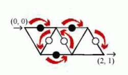

inupt 1
2 1
0 0 2 1
bb
nwwnw
bn
input 2
5 4
0 2 5 2
nnbnn
nnnwwbwnnnn
nbbbn
nnwbwwbwwnn
bwwww
nnbwbbwwbnn
nwwwn
nnnnbwbbnnn
nnwnn
output 1
6
output 2
22
对于第一个数据:
(0, 0) -> (1, 0) -> (0, 1) -> (1, 1) -> (1, 0) ->(2, 0) -> (2, 1)

对于第二个数据:
(0, 2) -> (1, 2) -> (1, 1) -> (2, 1) -> (2, 0) ->
(3, 0) -> (3, 1) -> (3, 2) -> (4, 1) -> (3, 1) ->
(3, 0) -> (2, 0) -> (2, 1) -> (1, 1) -> (1, 2) ->
(1, 3) -> (2, 3) -> (2, 4) -> (3, 4) -> (3, 3) ->
(4, 3) -> (4, 2) -> (5, 2)